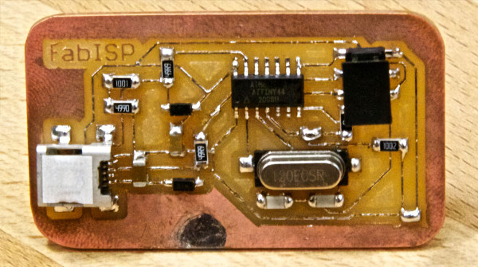
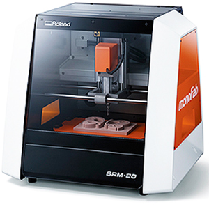
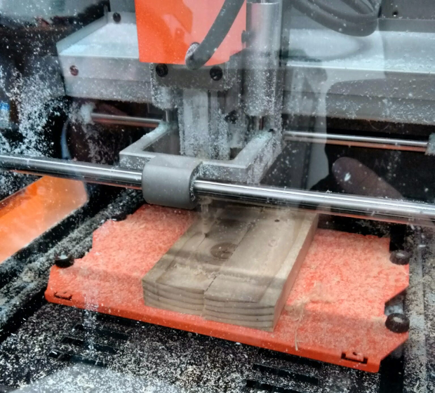
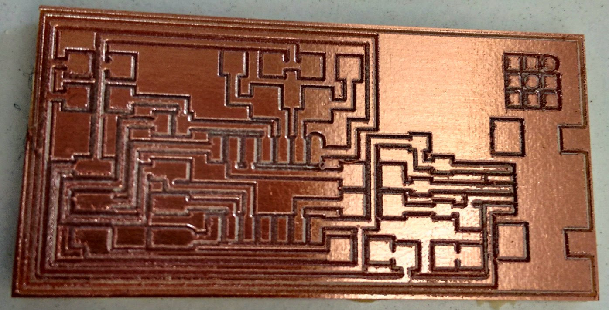
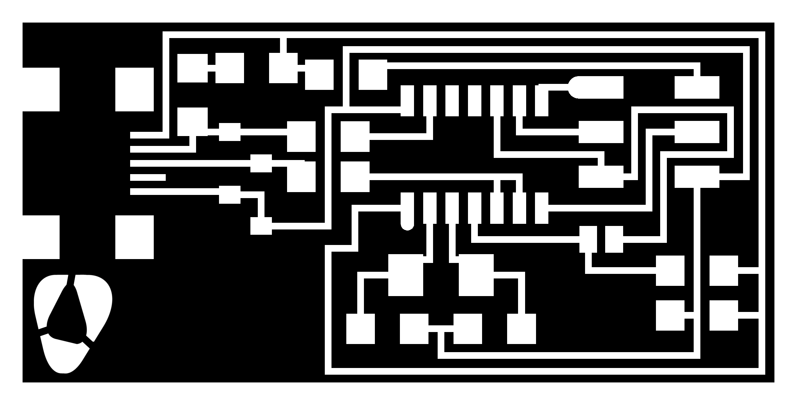
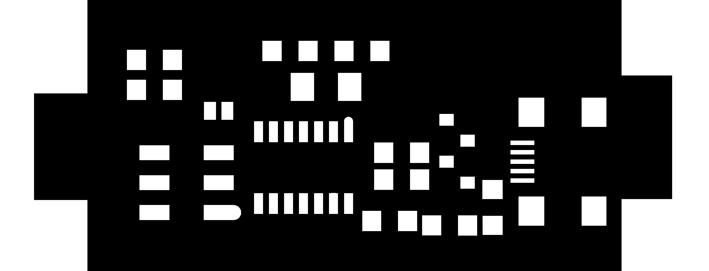
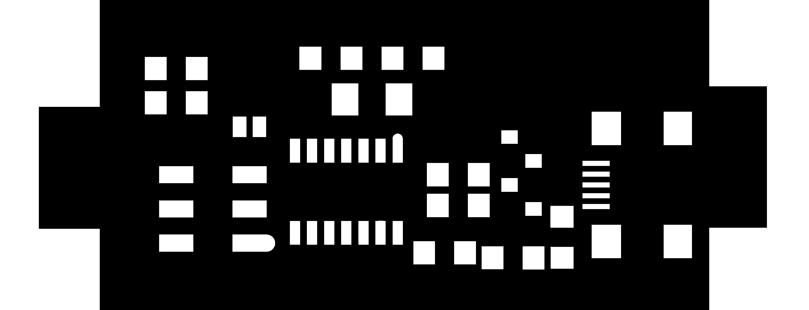

Electronics production
Make it, produce it, solder it
Build a FABISP
Learn by doing, doing mistakes, listen Neil, do it again, happy at the end. ;)
FABISP in the not so good way
This week i was invited to build an FABISP, a simple board that was very useful to program AVR microcontroller's from Atmel. FABISP
Electronics is my thing, but... I never produce a board like this, i always use electronic specific software like eagle, and i make my boards or by etching process or by ordering it from board houses. So the big challenge is how a png image, can be a physical board. First i use fabmodules to vectorize it. Than i try to import that svg to my SRM20 software. Rolland SRM20
Ok first the SRM20 adventure ;) My SRM20 have a lower bed so i must put some high to make the pcb reachable by the milling cutter. I pick some wood, glue tape it to the bed. After that i use the click mill software from the SRM20 to make it completely flat. With a 3mm milling cutter i made a flat surface where i gonna put my pcb. Leveling the bed
Well the first mistake was done ;) i use wood to be the bed, but i don't recommend it, because wood is random fiber material not so good or stable over time. In Fablab Penela where i test it i don't have FR2 so i use a board from bakelite. Error 2, FR2 have a much much better behavior. Error number 3 I chose the wrong collet. My milling cutter's are 3mm Shaft, but my collet are 1/8" or 3,175mm So i must use a conic milling cutter.But... My pcb work's ok, some off... 
My first milled pcb
Build a FABISP 2.0
Well well wellNow with the help of fabMaster's in Fablab EDP i build a fabisp.  I name it fabispPenela, in gimp change the logo.
 I mill it in MDX20.
Everything easy and smooth.
The challenge begin's in soldering it.
We at fablab try to adopt a new approach.
We are trying to solder all the component's via hot air.
So for this i use gimp to make a solder paste mask.

like this.
I mill it in MDX20.
Everything easy and smooth.
The challenge begin's in soldering it.
We at fablab try to adopt a new approach.
We are trying to solder all the component's via hot air.
So for this i use gimp to make a solder paste mask.

like this.
 After that i apply it in pcb
After that i apply it in pcb
 than i pass the solder paste
than i pass the solder paste
 populate the board with the component's
populate the board with the component's
 and applied the hot air to it.
and applied the hot air to it.
 And voilá the board was ready :)
Double check the connections and it was in did great.
Tip's and trick's i use an android app as microscope.
aTools
And voilá the board was ready :)
Double check the connections and it was in did great.
Tip's and trick's i use an android app as microscope.
aTools
Here is the link to this week files. :)